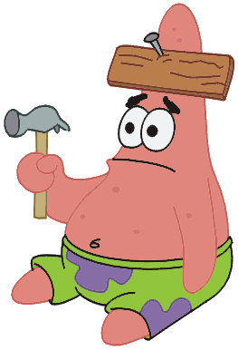

Bookmarks
Bookmarks
A collection of various links I've saved over the years that ranges across a
large variety of things, from programs, coding resources, art resources, to fun sites,
and so on. Anything with a star (⭐) is something I use often, or high recommend for people.
I'll try not to include things I see pretty often like w3schools (though please please, if you
do make your own website, it's so good for information). Each thing will have a #tag if
you need to ctrl + F to find it.
Table of Contents
Website Resources
Centric on resources for making your own website, either in the form of templates, sites to
check things, webrings/cool things, or just other resource hubs. You can also look in my
/links for other sites that are full of resources, but I wanted to link
to templates specifically as well
A huge list of resources for webmasters, most likely some of the stuff here may
also be there as well
#webrings #CSS #HTML #javascript #templates
A list of various webrings to join if you're not sure where to start with them
#webrings
Really simple website templates that are readable! And I love them for that fact
alone
#templates
A collection of various blinkies and a blinkie maker
#decorations
Simple and sweet for finding hex codes between two colour points / gradients
#colors #CSS
Backgrounds made with pure CSS, which makes it easier to customize. I used it for quite
a number of my pages
#CSS
Various box shadows to use for your boxes, a few of which I've used here
#CSS
Simple site to generate various CSS grids to use (I used it for my OC moodboards)
#CSS
Various cool hovering effects done in CSS
#CSS
Free coding courses for various things, such as JavaScript, or even a full web developer
course
#coding #HTML #CSS #javascript
Wonderful templates as well, simple and clean
#templates
Cute templates! I really like the shape of them!!
#templates #backgrounds #decorations
Another small set of templates, anime centric and cute
#templates
Accessible, simple, mobile-friendly layouts, and the basis for my character templates
and shrines; also includes a lot of very useful code snippets
#templates #coding
Placeholder images ... but it's dogs
#coding
This is more if your website has a few colours (like my own), real-time testing of
primary, secondary, and complimentary colours on a site
#tools #colors
Fun layouts!! Various shapes and layouts which are really fun
#templates #backgrounds #decorations
Really cool retro websites, very tech-y templates with a clean look
#templates
Cool transparent backgrounds which gives you the CSS to use for your website (though
they recommend not hotlinking and just downloading the texture)
#CSS
Really cool CSS bundle to make things look like Windows 7 windows!!
#CSS
A word editor that'll spit out the HTML coding to easily copy and paste for your
website
#HTML
Really fun templates!! A lot of 90's/00's vibes which I really like a lot
#templates
Firefox Extensions
My favourite extensions and a must!!! Don't murder your eyes with light mode at night!!!
This allows you to swap the Firefox theme at certain hours, like going from a day theme
you like, to a night one (or being like the one person I saw who turned their firefox
theme a bright red at night to scare them into going to bed)
#darkmode #customization
As it says on the tin, dark mode for sites that will auto adjust pending on your
location or time of choice; life saviour at night time
#darkmode #websites
A godsend for being able to be logged into multiple accounts on the same site (ex. art
account vs personal account), also for just keeping everything separate
#websites
If you browse Pinterest on your laptop, this will remove all the annoying ads and promos
they sneak in when you're trying to find things
#pinterest
As it says on the tin, return YouTube dislikes
#youtube
As it says on the tin, save images easily as PNG or JPEG (also good for images that
don't make it easy to be downloaded)
#images #files
Since it's a pain in the ass to look up images like you would in Chrome, this extension
helps with that (be aware, if you have Skip Redirect, it'll mess up; just need to
disable it for google)
#images #files
As it says on the tin, will try to get you to the final webpage rather than having you
go through 'middle' sites (think like the ad sites you go through before getting to your
download link)
#websites
Skip over sponsorships in videos (alongside things like intros, outros, subscription
reminders, etc.), and allows user submissions from people
#youtube
Allow websites to have custom redesigns, this has been a life saviour for sites like
Tumblr to return it back to its old layout, or give dark mode to sites that don't have
it. You can also theme your Neocities homepage with it
#websites #customization
C'mon ... c'mon. I know I said no 'duh' websites but like. uBlock Origins ... c'mon ...
the literal lifesaver from YouTube bothering you about getting Premium
#adblocker #youtube
Clean up your YouTube page to remove distracting elements like shorts, comments, or even
limiting the number of videos on the homepage
#youtube
Extra tidbits for enhancing your YouTube watching experience, I really like the audio
boost option for quieter videos
#extensions #youtube
A must for tumblr blogs, literally were it not for XKit and its predecessors the site
would be even shittier to use
#tumblr
Programs, Apps, and Tools
This is for useful online programs/links, apps I use, or actual programs to download. Most of
these I tend to use on a frequent, if not daily, basis. Some of these may be centric around
emails, privacy tools, or hubs to find things (thanks FMHY)
Email aliases, up to 10 MB monthly for free and unlimited alises (though the yearly
prices aren't too bad if you need more storage; 10MB usually covers all my current
aliases per month)
#email #privacy
Free, non-ad-riddled video and audio downloader, just put in a link, and go
#downloads #video
Saviour for your eyeballs, literally. Orange filter for nightime screen browsing
#program #qol
What can I say? Free Media Heck Yeah. I mostly use it to find websites to watch shows
#downloads
FOSS password
manager, has various extensions to allow to autofill on websites
#program #passwords
Privacy centric email, also has extra tidbits like cloud storage, VPN, and more, but I
use it just for its emailing service. Free, with tiers for more things like alias emails
+ ability to create automatic filters
#email #privacy
Good if you wanna break your scrolling habits on mobile, allows you to customize how
much you can use apps, or even visit websites. I'm still trying to feel out for web
equivalents, but
LeechBlock seems
to be the closest
#app #qol
Reminder breaks to get up or look away from the screen, can be customized
#program #qol
A scheduling app which I visually really like, it shows your schedule in chunks + how
much free time you have; a lot of the nicer things are behind the subscription cost
(like being able to repeat schedule chunks), but it is also indie made
#app #qol
What I use to just check for what giant files are still on my hard drives, make sure you
grab the free version
#program #storage
Privacy centric email, I also use this one for a different aspect of my life (banking
stuff). Also free and just has tiers for more extra tidbits
#email #privacy

Work in progress, I'll eventually work out what links I wanna add here ... too many
things I've got saved over time.